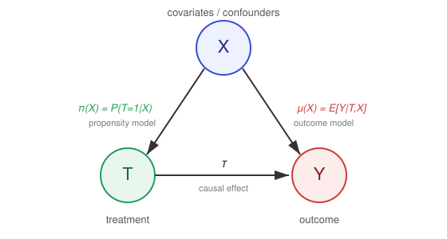
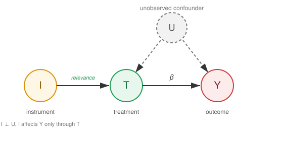
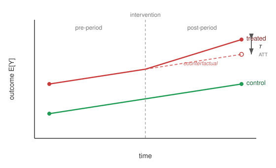
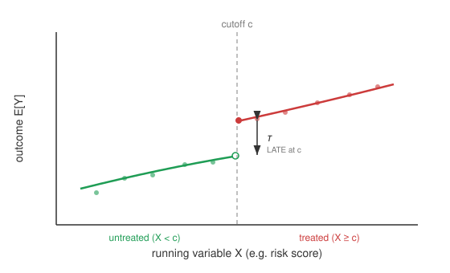
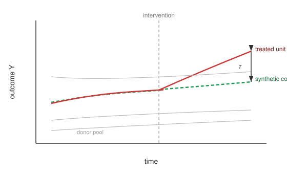

Regression Methods#
Regression-based estimators identify causal effects by explicitly modelling the relationship between covariates \(X\), treatment \(T\), and outcome \(Y\). They span a spectrum: from a single outcome model (g-computation), to estimators that combine an outcome model with a propensity model for robustness (AIPW, TMLE), to orthogonal machine-learning estimators that remain valid under flexible nuisance models (Double Machine Learning and its meta-learner extensions for heterogeneous effects). A second family — quasi-experimental designs such as instrumental variables, difference-in-differences, and regression discontinuity — exploits structural sources of exogenous variation rather than adjustment alone. The figure below shows the common causal structure that the adjustment-based estimators target.
{kind=link}

Fig. 10 Causal structure underlying adjustment-based regression estimators. The covariates \(X\) confound the treatment–outcome relationship through the propensity model \(\pi(X) = P(T = 1 \mid X)\) and the outcome model \(\mu(X) = \mathbb{E}[Y \mid T, X]\). Doubly robust estimators combine both to estimate the causal effect \(\tau\).#
Outcome Regression and G-Computation#
The simplest regression adjustment fits a single outcome model \(\hat{\mu}(t, x) = \mathbb{E}[Y \mid T = t, X = x]\) and contrasts its predictions under treatment and control, averaged over the covariate distribution. This is the parametric g-formula of Robins (1986) (see Hernán & Robins (2020) for a modern treatment), and it serves as the conceptual baseline on which the doubly robust and orthogonal estimators below build.
Algorithm 6 (G-Computation (Outcome Regression))
Inputs Data \(D = \{X, T, Y\}\), ML learner \(\mathcal{L}_Y\) (for outcome)
Outputs Estimated ATE \(\hat{\tau}\)
Fit outcome model \(\hat{\mu}(t, x) = \mathcal{L}_Y(Y \sim T, X)\) on \(D\)
For every observation \(i\):
Predict counterfactual outcomes \(\hat{\mu}(1, x^{(i)})\) and \(\hat{\mu}(0, x^{(i)})\)
Average the contrast: \(\hat{\tau} = \frac{1}{n}\sum_{i=1}^{n}\left[\hat{\mu}(1, x^{(i)}) - \hat{\mu}(0, x^{(i)})\right]\)
Return estimated treatment effect \(\hat{\tau}\)
G-computation is consistent only if the outcome model is correctly specified. Because a misspecified \(\hat{\mu}\) propagates directly into the estimate, it motivates the doubly robust estimators that add a second line of defence through the propensity score.
Doubly Robust Estimation: AIPW and TMLE#
Doubly robust estimators combine the outcome model \(\hat{\mu}(t, x)\) with the propensity model \(\hat{\pi}(x)\) so that the estimate is consistent if either model is correctly specified — a property that single-model approaches lack. The Augmented Inverse Propensity Weighting (AIPW) estimator of Robins, Rotnitzky & Zhao (1994) augments the g-computation estimate with an inverse-propensity-weighted residual correction; Bang & Robins (2005) developed the framework for causal inference, and van der Laan & Rubin (2006) introduced Targeted Maximum Likelihood Estimation (TMLE) as a substitution-based alternative with the same robustness guarantee. DML (next section) is essentially AIPW equipped with Neyman-orthogonality and cross-fitting.
Algorithm 7 (Augmented Inverse Propensity Weighting (AIPW))
Inputs Data \(D = \{X, T, Y\}\), ML learners \(\mathcal{L}_Y\) (outcome), \(\mathcal{L}_T\) (treatment)
Outputs Doubly robust ATE estimate \(\hat{\tau}\)
Fit nuisance models (with cross-fitting): outcome \(\hat{\mu}(t, x) = \mathcal{L}_Y(Y \sim T, X)\) and propensity \(\hat{\pi}(x) = \mathcal{L}_T(T \sim X)\)
For every observation \(i\), form the doubly robust score (g-computation plus IPW residual correction)
\[\hat{\psi}^{(i)} = \hat{\mu}(1, x^{(i)}) - \hat{\mu}(0, x^{(i)}) + \frac{T^{(i)}\,(Y^{(i)} - \hat{\mu}(1, x^{(i)}))}{\hat{\pi}(x^{(i)})} - \frac{(1 - T^{(i)})\,(Y^{(i)} - \hat{\mu}(0, x^{(i)}))}{1 - \hat{\pi}(x^{(i)})}\]Average the scores: \(\hat{\tau} = \frac{1}{n}\sum_{i=1}^{n}\hat{\psi}^{(i)}\)
Return estimated treatment effect \(\hat{\tau}\) (consistent if either \(\hat{\mu}\) or \(\hat{\pi}\) is correct)
Algorithm 8 (Targeted Maximum Likelihood Estimation (TMLE))
Inputs Data \(D = \{X, T, Y\}\), ML learners \(\mathcal{L}_Y\) (outcome), \(\mathcal{L}_T\) (treatment)
Outputs Doubly robust ATE estimate \(\hat{\tau}\)
Fit initial outcome model \(\hat{\mu}^0(t, x) = \mathcal{L}_Y(Y \sim T, X)\) and propensity \(\hat{\pi}(x) = \mathcal{L}_T(T \sim X)\)
Compute the clever covariate \(H^{(i)} = \frac{T^{(i)}}{\hat{\pi}(x^{(i)})} - \frac{1 - T^{(i)}}{1 - \hat{\pi}(x^{(i)})}\)
Targeting step: fit a one-parameter fluctuation \(\hat{\epsilon}\) by regressing \(Y\) on \(H\) with offset \(\hat{\mu}^0\), giving the updated model \(\hat{\mu}^\star(t, x)\)
Plug the targeted model into g-computation: \(\hat{\tau} = \frac{1}{n}\sum_{i=1}^{n}\left[\hat{\mu}^\star(1, x^{(i)}) - \hat{\mu}^\star(0, x^{(i)})\right]\)
Return estimated treatment effect \(\hat{\tau}\)
Double Machine Learning#
The DML estimator of Chernozhukov et al. (2018) makes the doubly robust idea robust to flexible, slowly-converging machine-learning nuisance models. For a binary or continuous treatment it builds on the partially linear model \(Y = \tau T + g(X) + \varepsilon\), whose residualize-then-regress solution is Robinson’s estimator (Robinson, 1988). By partialling out the covariate effect from both \(Y\) and \(T\) before estimating \(\tau\), the resulting moment condition is Neyman-orthogonal, so first-stage estimation error has only a second-order effect on \(\hat{\tau}\).
Algorithm 9 (Double Machine Learning)
Inputs Data \(D = \{X, T, Y\}\), ML learners \(\mathcal{L}_Y\) (for outcome), \(\mathcal{L}_T\) (for treatment)
Outputs Estimated causal effect \(\hat{\tau}\)
Split data \(D\) into two disjoint sets: \(D_{train}\) and \(D_{eval}\) (Cross-fitting/Honesty)
Outcome Residualization
Train model \(\hat{\mu}(X) = \mathcal{L}_Y(Y \sim X)\) on \(D_{train}\) (Predict \(Y\) using covariates only)
Compute residuals \(\tilde{Y} = Y - \hat{\mu}(X)\) on \(D_{eval}\)
Treatment Residualization
Train model \(\hat{\pi}(X) = \mathcal{L}_T(T \sim X)\) on \(D_{train}\) (Estimate propensity score)
Compute residuals \(\tilde{T} = T - \hat{\pi}(X)\) on \(D_{eval}\)
Causal Estimation
Regress outcome residuals on treatment residuals: \(\tilde{Y} = \tau \tilde{T} + \epsilon\)
Note: This identifies the effect using only the “exogenous” variation in \(T\)
Return estimated treatment effect \(\hat{\tau}\)
Meta-Learners for Heterogeneous Effects#
The estimators above target the average treatment effect. Meta-learners extend regression adjustment to the conditional average treatment effect (CATE) \(\tau(x) = \mathbb{E}[Y(1) - Y(0) \mid X = x]\) by decomposing the problem into standard regression sub-tasks solved by any base learner. Künzel et al. (2019) introduced the S-, T-, and X-learners; the R-learner of Nie & Wager (2021) is the direct CATE generalization of the DML residualization above, and the DR-learner of Kennedy (2023) regresses the doubly robust AIPW score on covariates. Semenova & Chernozhukov (2021) extend DML to estimate CATEs and other causal functions. These estimators bridge directly to the Algorithm 16 and Algorithm 17 methods that follow.
Algorithm 10 (Meta-Learners (S-, T-, X-Learner))
Inputs Data \(D = \{X, T, Y\}\), base learner \(\mathcal{L}\)
Outputs Estimated CATE \(\hat{\tau}(x)\)
S-learner (single model): fit \(\hat{\mu}(t, x) = \mathcal{L}(Y \sim T, X)\); return \(\hat{\tau}(x) = \hat{\mu}(1, x) - \hat{\mu}(0, x)\)
T-learner (two models): fit \(\hat{\mu}_1(x)\) on treated and \(\hat{\mu}_0(x)\) on control; return \(\hat{\tau}(x) = \hat{\mu}_1(x) - \hat{\mu}_0(x)\)
X-learner (cross fitting on imputed effects):
Impute effects \(\tilde{D}^{(i)}_1 = Y^{(i)} - \hat{\mu}_0(x^{(i)})\) for treated, \(\tilde{D}^{(i)}_0 = \hat{\mu}_1(x^{(i)}) - Y^{(i)}\) for control
Regress \(\hat{\tau}_1(x) = \mathcal{L}(\tilde{D}_1 \sim X)\) and \(\hat{\tau}_0(x) = \mathcal{L}(\tilde{D}_0 \sim X)\)
Combine with propensity weight: \(\hat{\tau}(x) = \hat{\pi}(x)\,\hat{\tau}_0(x) + (1 - \hat{\pi}(x))\,\hat{\tau}_1(x)\)
Return CATE \(\hat{\tau}(x)\)
Algorithm 11 (R-Learner (and DR-Learner))
Inputs Data \(D = \{X, T, Y\}\), ML learners for nuisances and a CATE learner \(\mathcal{L}_\tau\)
Outputs Estimated CATE \(\hat{\tau}(x)\)
With cross-fitting, estimate nuisances \(\hat{\pi}(x) = \mathbb{E}[T \mid X]\) and \(\hat{\mu}(x) = \mathbb{E}[Y \mid X]\)
Form residuals \(\tilde{Y} = Y - \hat{\mu}(X)\) and \(\tilde{T} = T - \hat{\pi}(X)\) (as in Algorithm 9)
R-learner: minimize the weighted loss \(\hat{\tau} = \arg\min_{\tau} \sum_i \left(\tilde{Y}^{(i)} - \tau(x^{(i)})\,\tilde{T}^{(i)}\right)^2\)
DR-learner (alternative): regress the AIPW score \(\hat{\psi}^{(i)}\) from Algorithm 7 on covariates, \(\hat{\tau}(x) = \mathcal{L}_\tau(\hat{\psi} \sim X)\)
Return CATE \(\hat{\tau}(x)\)
Instrumental Variable Approach#
When unobserved confounding exists, an instrument \(I\) can identify the causal effect if (Shalizi, 2025, Ch. 23):
Relevance: \(I\) affects \(T\)
Exogenous noise: \(I \perp U\) — the instrumental variable is independent of the unobserved confounder
Exclusion restriction: \(I\) affects \(Y\) only through \(T\)
The modern econometric interpretation of instrumental variables traces to Imbens & Angrist (1994), who show that 2SLS identifies a local average treatment effect for compliers, and to the potential-outcomes framework of Angrist, Imbens & Rubin (1996); Angrist & Krueger (1991) is the canonical applied example, using quarter of birth as an instrument for schooling.
The instrumental variable \(I\) is a source of exogenous variation in \(T\) that is uncorrelated with the common ancestors of \(T\) and \(Y\). By seeing how both \(T\) and \(Y\) respond to these perturbations, and using the fact that \(I\) only influences \(Y\) through \(T\), we can deduce the causal effect of \(T\) on \(Y\).
{kind=link}

Fig. 11 Instrumental variable \(I\). The instrument induces exogenous variation in the treatment \(T\) while being independent of the unobserved confounder \(U\) and affecting the outcome \(Y\) only through \(T\).#
Two Stage Least Squares Regression#
Algorithm 12 (Two Stage Least Squares)
Inputs Observed instrument \(I\), treatment variable \(T\), outcome \(Y\)
Outputs Estimated causal effect \(\hat{\beta}\) of \(T\) on \(Y\)
Stage 1: Regress \(T\) on instrument \(I\) (Isolate exogenous variation)
Estimate \(\hat{\alpha}\) from \(T = \alpha I + \epsilon_1\)
Compute predicted values \(\hat{T} = \hat{\alpha} I\) (\(\hat{T}\) is now independent of \(U\))
Stage 2: Regress \(Y\) on predicted \(\hat{T}\) (Identify causal mechanism)
Estimate \(\hat{\beta}\) from \(Y = \beta \hat{T} + \epsilon_2\)
Return estimated causal effect \(\hat{\beta}\)
Quasi-Experimental Designs#
When adjustment for measured covariates is insufficient, quasi-experimental designs recover causal effects by exploiting structural features of how treatment is assigned — over time, around a threshold, or relative to a comparison unit. These designs are especially relevant for longitudinal data. They form the empirical core of modern applied econometrics; the introductory textbooks of Angrist & Pischke (2009), Angrist & Pischke (2015) and Cunningham (2021), together with the more statistical treatment of Imbens & Rubin (2015), give book-length introductions to the methods below.
Difference-in-Differences#
Difference-in-differences (DiD) compares the change in outcomes over time between a treated and a control group. Under the parallel trends assumption — that, absent treatment, both groups would have evolved in parallel — the post-period gap beyond the projected control trend identifies the average treatment effect on the treated (ATT). The design dates back to Ashenfelter & Card (1985), and Card & Krueger (1994) is its best-known application — the New Jersey minimum-wage study. Sant’Anna & Zhao (2020) give a doubly robust DiD estimator, while Callaway & Sant’Anna (2021) and Goodman-Bacon (2021) extend the design to multiple periods and staggered treatment timing.
{kind=link}

Fig. 12 Difference-in-differences. Under parallel trends, the treated group’s counterfactual (dashed) would have followed the control trend; the vertical gap \(\tau\) in the post-period is the ATT.#
Algorithm 13 (Difference-in-Differences (2x2))
Inputs Outcomes \(Y\) for treated/control groups, pre/post periods; optional covariates \(X\)
Outputs Estimated ATT \(\hat{\tau}\)
Compute the treated change: \(\Delta_{\text{treated}} = \bar{Y}^{\text{post}}_{\text{treated}} - \bar{Y}^{\text{pre}}_{\text{treated}}\)
Compute the control change: \(\Delta_{\text{control}} = \bar{Y}^{\text{post}}_{\text{control}} - \bar{Y}^{\text{pre}}_{\text{control}}\)
Difference the differences: \(\hat{\tau} = \Delta_{\text{treated}} - \Delta_{\text{control}}\) (removes time-invariant confounding)
(Optional) For covariate-conditional parallel trends, use a doubly robust estimator combining outcome-change regression and a propensity model
Return estimated ATT \(\hat{\tau}\)
Regression Discontinuity#
Regression discontinuity (RD) applies when treatment is assigned by a threshold rule on a continuous running variable \(X\) (e.g. a risk score). The design was first proposed by Thistlethwaite & Campbell (1960); its modern econometric foundations are due to Hahn, Todd & van der Klaauw (2001). Units just below and just above the cutoff \(c\) are comparable, so the jump in the outcome at \(c\) identifies the local average treatment effect (LATE). Imbens & Lemieux (2008) provide a practical guide to estimation and bandwidth selection.
{kind=link}

Fig. 13 Regression discontinuity. Treatment switches on at the cutoff \(c\); the vertical jump \(\tau\) in the fitted outcome at \(c\) identifies the local average treatment effect.#
Algorithm 14 (Regression Discontinuity)
Inputs Running variable \(X\), outcome \(Y\), cutoff \(c\), bandwidth \(h\)
Outputs Estimated LATE \(\hat{\tau}\) at the cutoff
Restrict to observations within the bandwidth, \(|X - c| \le h\)
Fit a local regression just below the cutoff: \(\hat{\mu}_-(c) = \lim_{x \uparrow c} \mathbb{E}[Y \mid X = x]\)
Fit a local regression just above the cutoff: \(\hat{\mu}_+(c) = \lim_{x \downarrow c} \mathbb{E}[Y \mid X = x]\)
Estimate the discontinuity: \(\hat{\tau} = \hat{\mu}_+(c) - \hat{\mu}_-(c)\)
Return estimated LATE \(\hat{\tau}\)
Synthetic Control#
When only a single (or a few) treated unit is observed over time, the synthetic control method — introduced by Abadie & Gardeazabal (2003) and formalized by Abadie, Diamond & Hainmueller (2010) — constructs a counterfactual as a weighted combination of untreated donor units chosen to match the treated unit’s pre-intervention trajectory. The post-intervention gap between the treated unit and its synthetic counterpart estimates the effect.
{kind=link}

Fig. 14 Synthetic control. Donor-pool units are weighted so the synthetic control (dashed) tracks the treated unit before intervention; the post-intervention gap \(\tau\) is the estimated effect.#
Algorithm 15 (Synthetic Control)
Inputs Treated unit, donor pool of \(J\) untreated units, pre-intervention outcomes and predictors
Outputs Estimated effect path \(\hat{\tau}_t\) for post-intervention periods
Choose non-negative weights \(w_1, \ldots, w_J\) (summing to one) minimizing the pre-intervention distance between the treated unit and the weighted donor pool
Construct the synthetic control outcome \(\hat{Y}^{\text{synth}}_t = \sum_{j=1}^{J} w_j\, Y^{(j)}_t\) for each period \(t\)
For each post-intervention period, estimate the effect \(\hat{\tau}_t = Y^{\text{treated}}_t - \hat{Y}^{\text{synth}}_t\)
Return the estimated effect path \(\hat{\tau}_t\)